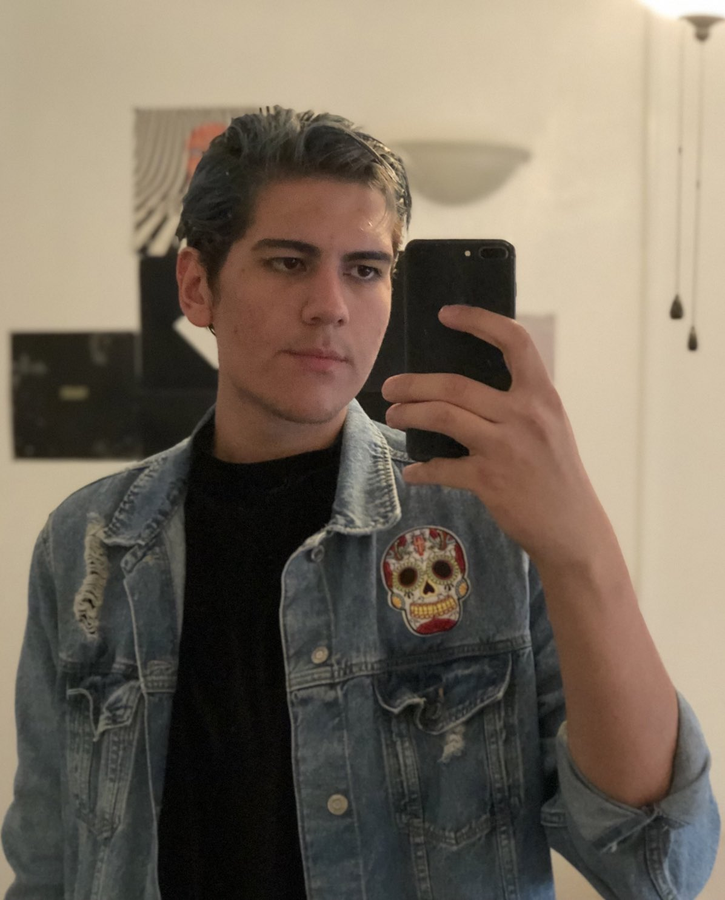

Andres Galindo
Email:
argalin2@asu.edu
Phone:
9282617006
Address:
Arizona State University

Objective
As a student in the Digital Culture program at the Herberger Institute, I plan to master all the technical skills necessary to be able to create thorough, thought-provoking pieces of media.
Education
| School |
Year |
Degree |
| Kofa High School |
2018 |
HS Diploma |
| ASU |
2022 |
BS |
Experience
Starbucks
- Delegated responsibilities to baristas to ensure store operations ran smoothly
- Led team through opening and closing protocols
- Ensured store adhered to food safety procedures.
CIDSE Advising Office
- Oversaw reception area including greeting visitors, maintaining confidentiality with incoming
paperwork, coordinating inventory, and answering the front desk telephone.
- Managed calendar for 13 academic advisors by scheduling appointment requests pursuant to
department standards.
- Assisted with miscellaneous department tasks including event planning and promotion.
References
- Daphne Galvan (602)679-1102
- Jennifer Hinder (858)344-3383
- Jennifer Miller (928)750-3149